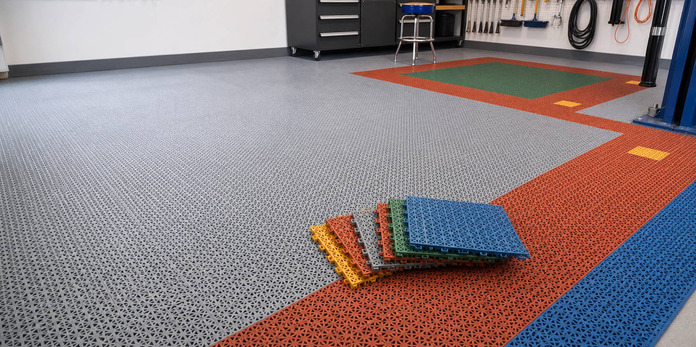

Швидке складання
Модулі з'єднуються між собою без клею. Покриття можна зібрати, розібрати або частково замінити.

Роздрібна ціна за один модуль. Оптова ціна 83 грн/шт. від 300 шт.
Допустиме навантаження для робочих, технічних і паркувальних зон.
Формат модуля для швидкого монтажу, демонтажу та заміни окремих плиток.
Переваги
Модулі з'єднуються між собою без клею. Покриття можна зібрати, розібрати або частково замінити.
Текстура та наскрізні отвори допомагають зменшити ковзання і швидше відводити воду, пісок та бруд.
Поліпропілен стійкий до води, масел, бензину та мийних засобів для сервісних зон.
Зелений, теракотовий, синій, червоний, жовтий і сірий модулі для розмітки робочих зон.
Деталі
Модульна плитка підходить для гаражів, СТО, автомийок, детейлінг-сервісів, паркінгів і технічних приміщень. Догляд простий: покриття можна мити звичайною водою та сервісною хімією.
Для кого
У гаражі, щоб захистити бетон і зробити простір візуально охайним.
На СТО та автомийці, де є вода, бруд, масло і щоденне навантаження.
У детейлінг-зоні або паркінгу, де важливі зовнішній вигляд, безпека та легке прибирання.
Контакт
Ціна: 90 грн/шт. Опт: 83 грн/шт. при замовленні від 300 шт.